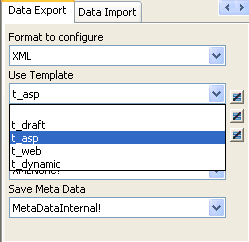
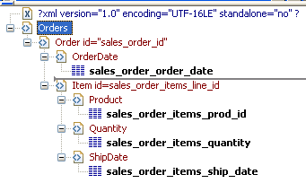
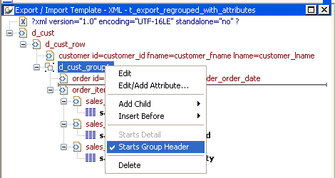
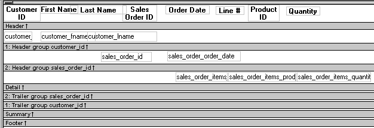

You can export the data in a DataWindow object or DataStore object to XML using any of the techniques used for exporting to other formats such as PSR or HTML:
ds_1.SaveAs("C:\TEMP\Temp.xml", Xml!, true)ls_xmlstring = dw_1.Object.DataWindow.Data.XML
ls_xmlstring = dw_1.Describe(DataWindow.Data.XML)
When you export data, PowerBuilder uses an export template to specify the content of the generated XML.
 Default export format If you have not created or assigned an export template, PowerBuilder uses
a default export format. This is the same format used when you create
a new default export template. See "Creating templates".
Default export format If you have not created or assigned an export template, PowerBuilder uses
a default export format. This is the same format used when you create
a new default export template. See "Creating templates".
The Data Export page in the Properties view lets you set properties for exporting data to XML.
In addition to the properties that you can set on this page, PowerBuilder provides two properties that you can use to let the user of an application select an export template at runtime. See "Selecting templates at runtime".
The names of all templates that you create and save for the current DataWindow object display in the Use Template drop-down list.

The template you select from the list is used to conform the XML generated by any of the methods for saving as XML to the specifications defined in the named template. Selecting a template from the list box sets the DataWindow object's Export.XML.UseTemplate property. You can also modify the value of the UseTemplate property dynamically in a script. For example, an XML publishing engine would change templates dynamically to create different presentations of the same data.
When you open a DataWindow, the Export/Import Template view displays the template specified in the DataWindow's Use Template property. (If the view is not visible in the current layout, select View>Export/Import Template>XML from the menu bar.) If the property has not been set, the first saved template displays or, if there are no saved templates, the default structured template displays as a basis for editing.
When the DataWindow is saved as XML, PowerBuilder uses the template specified in the Use Template property. If the property has not been set, PowerBuilder uses the default template.
When you are working on a template, you might want to see the result of your changes. The template specified in the Use Template property might not be the template currently displayed in the Export/Import Template view, so you should check the value of the Use template property to be sure you get the results you expect.
 To save to XML using the current template:
To save to XML using the current template:
Right-click in the Export/Import template view and select Save or Save As from the pop-up menu to save the current template.
On the Data Export page in the properties view, select the current template from the Use Template drop-down list.
Select File>Save Rows As, select XML from the Files of Type drop-down list, enter a file name, and click Save.
To generate the contents of the header section iteratively for each group in a group DataWindow, check the Iterate Header for Groups check box, or set the Export.XML.HeadGroups DataWindow property. This property is on by default.
For example, consider a group DataWindow object that includes the columns sales_order_id and sales_order_order_date. The following screenshot shows the template for this DataWindow object:

The root element in the Header section of the template, Orders, has a child element, Order. Order has an id attribute whose value is a control reference to the column sales_order_id. Order also has a child element, OrderDate, that contains a column reference to the sales_order_order_date column. These elements make up the header section that will be iterated for each group.
The Detail Start element, Item, has an id attribute whose value is a control reference to the column sales_order_items_line_id. It also has three child elements that contain column references to the line items for product ID, quantity, and ship date.
When the DataWindow is exported with the Iterate Header for Groups property on, the order ID and date iterate for each group. The following XML output shows the first three iterations of the group header:
<?xml version="1.0" encoding="UTF-16LE" standalone="no"?>
<Orders>
<Order id="2001">
<OrderDate>2002-03-14</OrderDate>
<Item id="1">
<Product>300</Product>
<Quantity>12</Quantity>
<ShipDate>2005-09-15</ShipDate>
</Item>
<Item id="2">
<Product>301</Product>
<Quantity>12</Quantity>
<ShipDate>2005-09-14</ShipDate>
</Item>
<Item id="3">
<Product>302</Product>
<Quantity>12</Quantity>
<ShipDate>2005-09-14</ShipDate>
</Item>
</Order>
<Order id="2002">
<OrderDate>2002-03-18</OrderDate>
<Item id="2">
<Product>401</Product>
<Qty>24</Qty>
<ShipDate>2002-09-18</ShipDate>
</Item>
<Item id="1">
<Product>400</Product>
<Qty>24</Qty>
<ShipDate>2002-09-18</ShipDate>
</Item>
</Order>
<Order id="2003">
<OrderDate>2002-03-21</OrderDate>
<Item id="3">
<Product>400</Product>
<Qty>12</Qty>
<ShipDate>2002-09-23</ShipDate>
</Item>
...
For DataWindow objects with more than one group, when you generate a new default template, each group after the first is identified with a special icon and a check on the pop-up menu next to the Starts Group Header item.

When the Iterate Header for Groups check box is selected, each XML fragment in the header section between a Group Header element and the next Group Header element or Detail Start element is iterated.
In the template shown in the previous illustration, sales are grouped by customer ID, then by order ID. The customer group header has attributes for the customer's ID and first and last names. The order group header has attributes for the order ID and date. The following illustration shows the DataWindow in the Design view:

The following XML output shows the first iteration of the customer group header and the first and second iterations of the order group header:
<?xml version="1.0" encoding="UTF-16LE" standalone="no"?>
<d_customer>
<customer id="101" fname="Michaels" lname="Devlin">
<order id="2001" date="1996-03-14">
<order_item>
<sales_order_items_line_id>1</sales_order_items_line_id>
<sales_order_items_prod_id>300</sales_order_items_prod_id>
<sales_order_items_quantity>12</sales_order_items_quantity>
</order_item>
<order_item>
<sales_order_items_line_id>2</sales_order_items_line_id>
<sales_order_items_prod_id>301</sales_order_items_prod_id>
<sales_order_items_quantity>12</sales_order_items_quantity>
</order_item>
<order_item>
<sales_order_items_line_id>3</sales_order_items_line_id>
<sales_order_items_prod_id>302</sales_order_items_prod_id>
<sales_order_items_quantity>12</sales_order_items_quantity>
</order_item>
</order>
<order id="2005" date="1996-03-24">
<order_item>
<sales_order_items_line_id>1</sales_order_items_line_id>
<sales_order_items_prod_id>700</sales_order_items_prod_id>
<sales_order_items_quantity>12</sales_order_items_quantity>
</order_item>
</order>
By default, the XML is exported without formatting. If you want to view or verify the exported XML in a text editor, check the Include Whitespace check box or set the Export.XML.IncludeWhitespace property in a script. Turning this property on causes the export process to insert tabs, carriage returns, and linefeed characters into the XML so that it is easier to read. Most of the examples in this chapter were exported with this property turned on.
 Do not import formatted XML You should not try to import XML formatted with white space
characters, because the white space between data element tags is
considered to be part of the element.
Do not import formatted XML You should not try to import XML formatted with white space
characters, because the white space between data element tags is
considered to be part of the element.
You can specify that metadata in the form of a DTD or schema should be exported when you save the DataWindow object. You can choose to save the metadata with the XML or in a separate file.
If you export metadata as a schema, you can associate it with a namespace. See "Associating a namespace with an exported schema".
To specify how metadata should be saved, select a value from the Meta Data Type drop-down list or set the Export.XML.MetaDataType property. The possible values are:
If the data item for a column is null or an empty string, an empty element is created. If you select XMLSchema!, child elements with null data items are created with the content "xsi:nil='true'".
The metadata is saved into the exported XML itself or into an associated file, depending on the setting in the Save Meta Data drop-down list or the Export.XML.SaveMetaData property. The possible values are:
For example, if you select XMLDTD! and MetaDataInternal!, the header and first row of the exported XML would look like this for a simple grid DataWindow for the contact table in the EAS Demo DB. The Include Whitespace property has also been selected and the file name is dtdinternal.xml:
<?xml version="1.0" encoding="UTF-16LE" standalone="yes"?>
<!DOCTYPE dtdinternal [<!ELEMENT dtdinternal (dtdinternal_row*)>
<!ELEMENT dtdinternal_row (id, last_name, first_name, title, street, city, state, zip, phone, fax)>
<!ELEMENT id (#PCDATA)>
<!ELEMENT last_name (#PCDATA)>
<!ELEMENT first_name (#PCDATA)>
<!ELEMENT title (#PCDATA)>
<!ELEMENT street (#PCDATA)>
<!ELEMENT city (#PCDATA)>
<!ELEMENT state (#PCDATA)>
<!ELEMENT zip (#PCDATA)>
<!ELEMENT phone (#PCDATA)>
<!ELEMENT fax (#PCDATA)>
]>
<dtdinternal>
<dtdinternal_row>
<id>1</id>
<last_name>Hildebrand</last_name>
<first_name>Jane</first_name>
<title>ma</title>
<street>1280 Washington St.</street>
<city>Emeryville</city>
<state>MI</state>
<zip>94608</zip>
<phone>5105551309</phone>
<fax>5105554209</fax>
</dtdinternal_row>
If you select MetaDataExternal! instead, the generated XML in dtdexternal.xml looks like this:
<?xml version="1.0" encoding="UTF-16LE"?>
<!DOCTYPE dtdexternal SYSTEM "dtdexternal.dtd">
<dtdexternal>
<dtdexternal_row>
<id>1</id>
<last_name>Hildebrand</last_name>
<first_name>Jane</first_name>
<title>ma</title>
<street>1280 Washington St.</street>
<city>Emeryville</city>
<state>MI</state>
<zip>94608</zip>
<phone>5105551309</phone>
<fax>5105554209</fax>
</dtdexternal_row>
The DTD is in dtdexternal.dtd:
<?xml version="1.0" encoding="UTF-16LE"?><!ELEMENT dtdexternal (dtdexternal_row*)>
<!ELEMENT dtdexternal_row (id, last_name, first_name, title, street, city, state, zip, phone, fax)>
<!ELEMENT id (#PCDATA)>
<!ELEMENT last_name (#PCDATA)>
<!ELEMENT first_name (#PCDATA)>
<!ELEMENT title (#PCDATA)>
<!ELEMENT street (#PCDATA)>
<!ELEMENT city (#PCDATA)>
<!ELEMENT state (#PCDATA)>
<!ELEMENT zip (#PCDATA)>
<!ELEMENT phone (#PCDATA)>
<!ELEMENT fax (#PCDATA)>
 MetaDataExternal! not supported for dot notation The metadata cannot be saved in an external file if you use
dot notation to generate the XML.
MetaDataExternal! not supported for dot notation The metadata cannot be saved in an external file if you use
dot notation to generate the XML.
If you export metadata in the form of a schema, you can associate a namespace with the schema. To do so, right-click the root element in the Export/Import template view and select Schema Options from the pop-up menu. In the dialog box, specify the namespace prefix and URI.
When the Meta Data Type property is XMLSchema! and the Save Meta Data property is MetaDataInternal!, so that the XML schema is generated inline, you can specify a name for the root element. If the root element name is specified, it appears in the generated XML.
In the following example, the root element name is Contacts, the namespace prefix is po, and the URI is http://www.example.com/PO1.
The example shows the header and the first row of the generated XML:
<?xml version="1.0" encoding="UTF-16LE" standalone="no"?>
<Contacts>
<xs:schema xmlns:po="http://www.example.com/PO1"
xmlns:xs="http://www.w3.org/2001/XMLSchema"
targetNamespace="http://www.example.com/PO1"
elementFormDefault="qualified"
attributeFormDefault="unqualified">
<xs:element name="d_contact_list">
<xs:complexType>
<xs:sequence>
<xs:element ref="d_contact_list_row"
maxOccurs="unbounded" minOccurs="0"/>
</xs:sequence>
</xs:complexType>
</xs:element>
<xs:element name="d_contact_list_row">
<xs:complexType>
<xs:sequence>
<xs:element ref="id"/>
<xs:element ref="last_name"/>
<xs:element ref="first_name"/>
<xs:element ref="city"/>
<xs:element ref="state"/>
</xs:sequence>
</xs:complexType>
</xs:element>
<xs:element name="id" type="xs:int"/>
<xs:element name="last_name" type="xs:string"/>
<xs:element name="first_name" type="xs:string"/>
<xs:element name="city" type="xs:string"/>
<xs:element name="state" type="xs:string"/>
</xs:schema>
<po:d_contact_list xmlns:po=
"http://www.example.com/PO1" xmlns:xsi=
"http://www.w3.org/2001/XMLSchema-instance">
<po:d_contact_list_row>
<po:id>1</po:id>
<po:last_name>Hildebrand</po:last_name>
<po:first_name>Jane</po:first_name>
<po:city>Emeryville</po:city>
<po:state>MI</po:state>
</po:d_contact_list_row>
By default, the generated XML is not associated with a namespace.
Two DataWindow properties, Export.XML.TemplateCount and Export.XML.Template[ ].Name, enable you to provide a list of templates from which the user of the application can select at runtime.
The TemplateCount property gets the number of templates associated with a DataWindow object. You can use this number as the upper limit in a FOR loop that populates a drop-down list with the template names. The FOR loop uses the Template[ ].Name property.
string ls_template_count, ls_template_name
long i
ls_template_count=dw_1.Describe
("DataWindow.Export.XML.TemplateCount")
for i=1 to Long(ls_template_count)
ls_template_name=
dw_1.Object.DataWindow.Export.XML.Template[i].Name
ddlb_1.AddItem(ls_template_name)
next
Before generating the XML, set the export template using the text in the drop-down list box.
dw_1.Object.DataWindow.Export.XML.UseTemplate=
ddlb_1.text